FME production verify -- ERS_Ld10_5D_smoke
EAM h0 | MPAS-O fmeDepthCoarsening | MPAS-O fmeDepthCoarsening (5-day mean companion) | MPAS-O fmeDerivedFields | MPAS-O fmeDerivedFields (5-day mean companion) | MPAS-SI fmeSeaiceDerivedFields | MPAS-SI fmeSeaiceDerivedFields (5-day mean companion) Click any variable card to open the side-by-side viewer; use ← /→ to navigate within a stream, Esc to close.
EAM h0 Browse →
1 file(s):ERS_Ld10_P1024.ne30pg2_r05_IcoswISC30E3r5.WCYCL1850.pm-cpu_gnu.allactive-fme_output.20260509_073147_bgfmjv.eam.h0.0001-01.nc
[OK] merged 1 file(s)
[OK] time: 41 records spanning [0.00, 10.00] 0001-01-01 00:00:00
[OK] 71 variable(s) with lat+lon dims
[OK] fill-leak scan: 71 var(s) clean. canonical-fill cells per var: 0..0 of 2656800 (expected: land/bathymetry)
FSDS [W/m2]
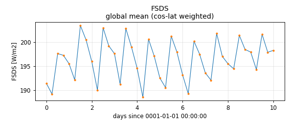
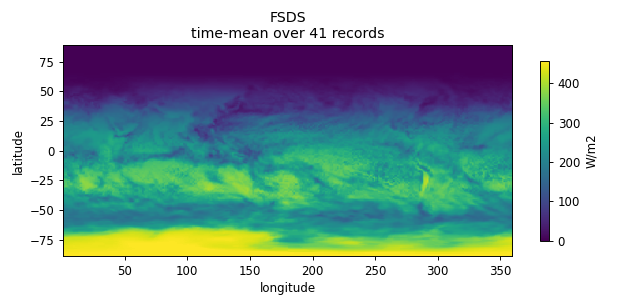
FSNS [W/m2]
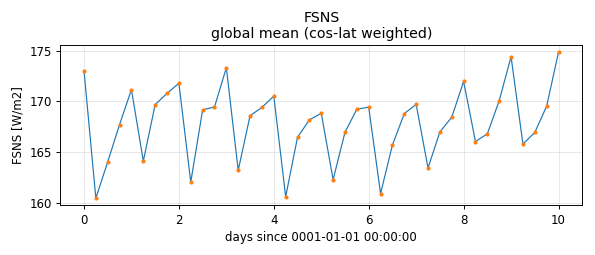
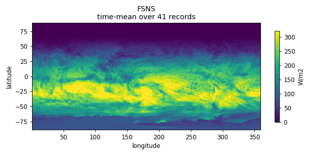
FSNTOA [W/m2]
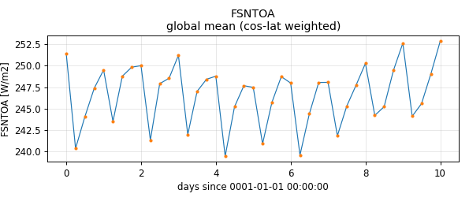
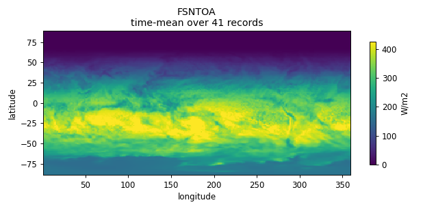
FSUS [W/m2]
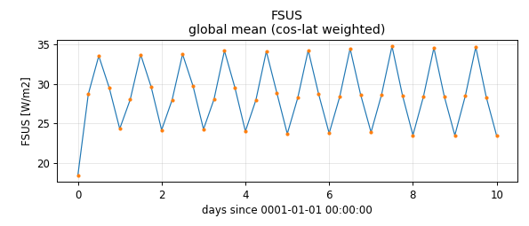
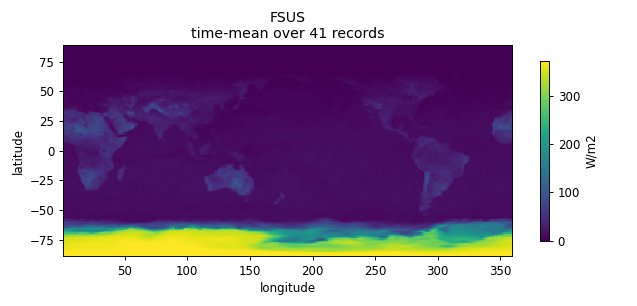
FSUTOA [W/m2]
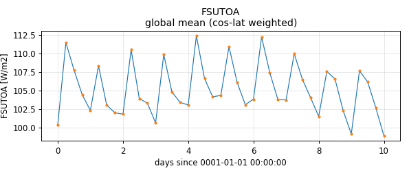
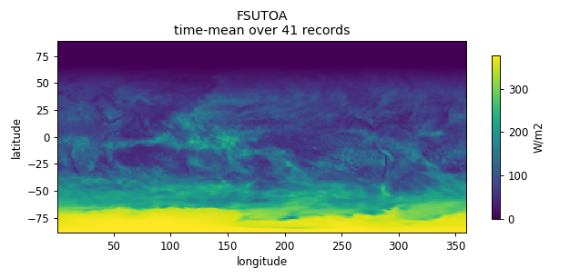
ICEFRAC [1]
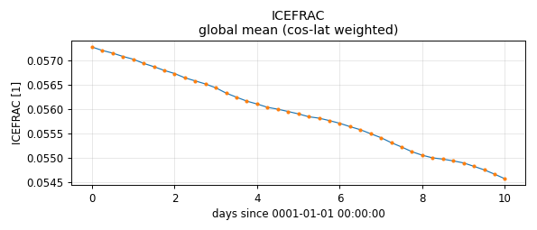
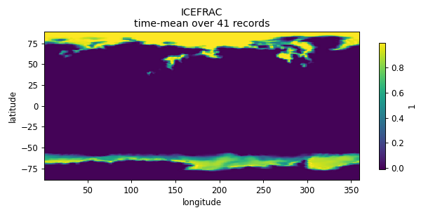
LANDFRAC [1]
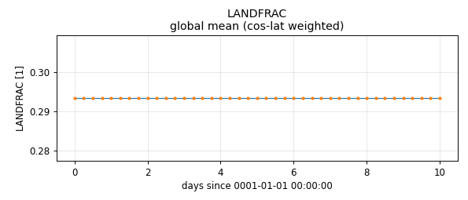
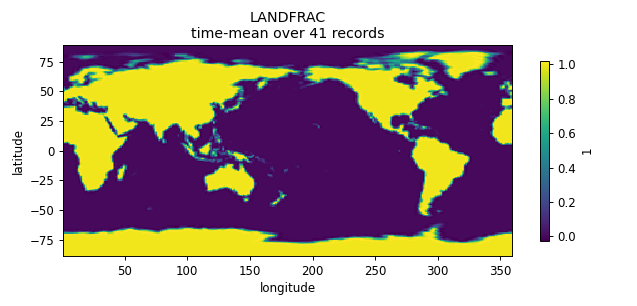
LHFLX [W/m2]
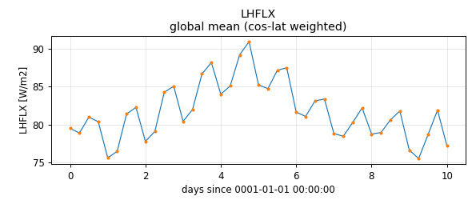
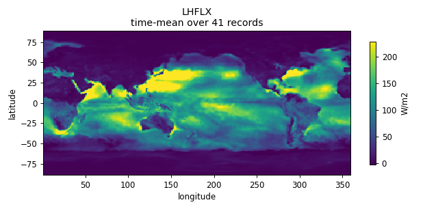
OCNFRAC [1]
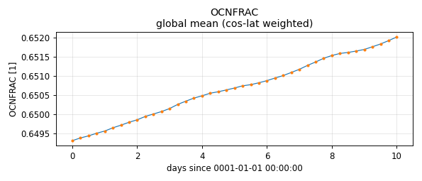
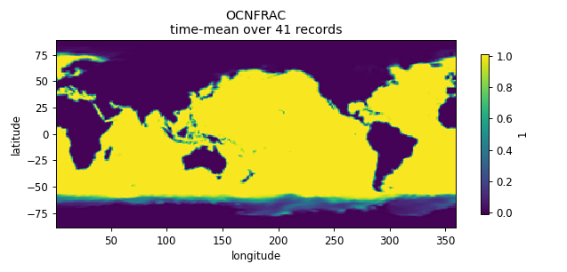
PHIS [m2/s2]
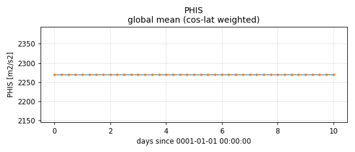
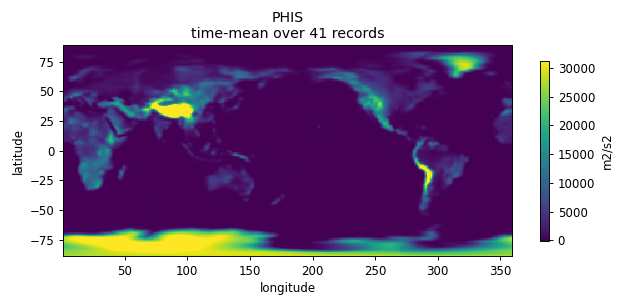
PRECST [m/s]
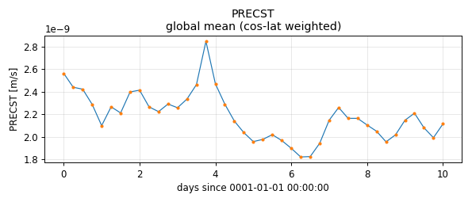
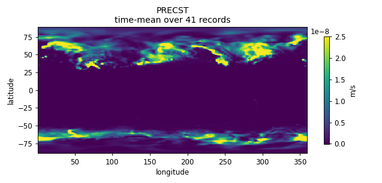
PRECT [m/s]
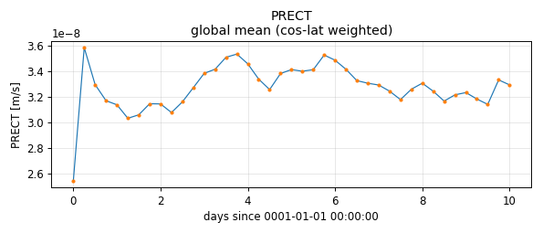
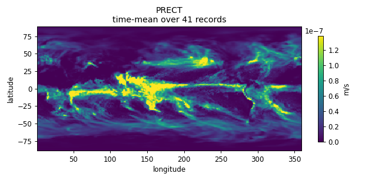
PS [Pa]
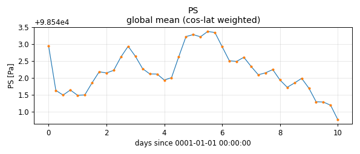
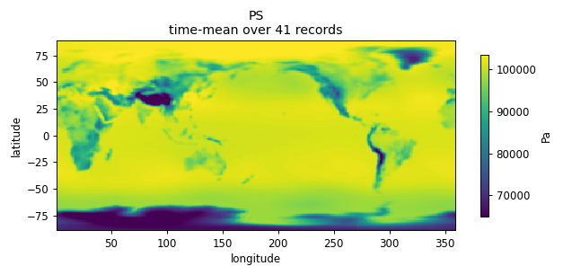
QREFHT [kg/kg]
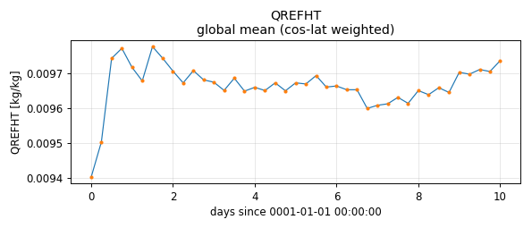
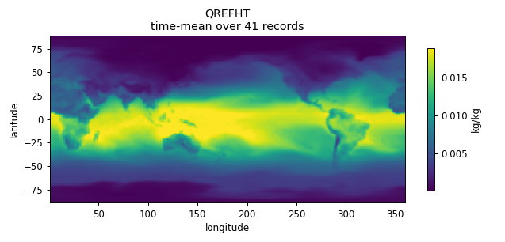
Q_0 [kg/kg]
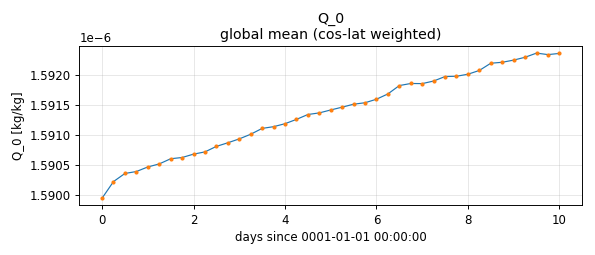
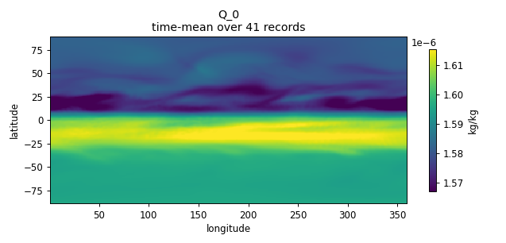
Q_1 [kg/kg]
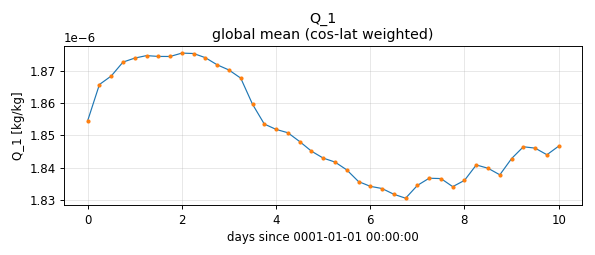
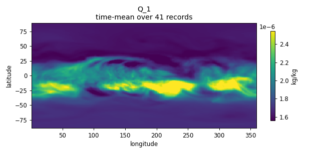
Q_2 [kg/kg]
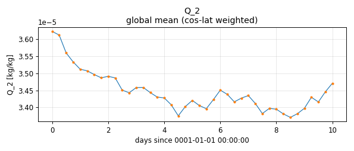
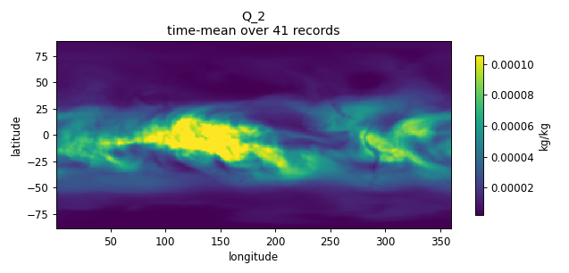
Q_5 [kg/kg]
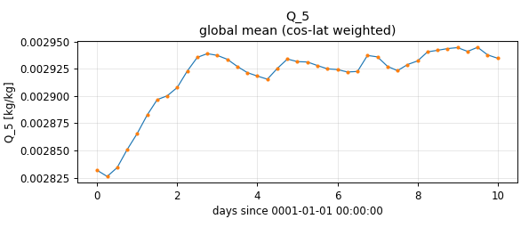
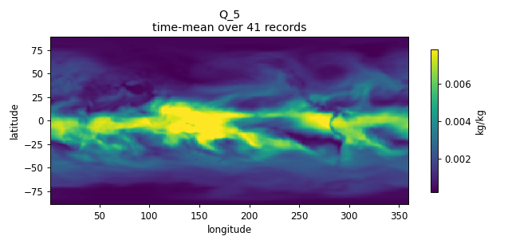
MPAS-O fmeDepthCoarsening Browse →
1 file(s):ERS_Ld10_P1024.ne30pg2_r05_IcoswISC30E3r5.WCYCL1850.pm-cpu_gnu.allactive-fme_output.20260509_073147_bgfmjv.mpaso.hist.am.fmeDepthCoarsening.0001-01.remapped.nc
[OK] merged 1 file(s)
[OK] time: 10 records spanning [1.00, 10.00] 0001-01-01 00:00:00
[OK] time_reference_date = '0001-01-01 00:00:00'
[OK] 209 variable(s) with lat+lon dims
[OK] fill-leak scan: 209 var(s) clean. canonical-fill cells per var: 0..494530 of 648000 (expected: land/bathymetry)
layerThicknessCoarsened_0 [m]
layerThicknessCoarsened_1 [m]
layerThicknessCoarsened_10 [m]
layerThicknessCoarsened_11 [m]
layerThicknessCoarsened_12 [m]
layerThicknessCoarsened_13 [m]
layerThicknessCoarsened_14 [m]
layerThicknessCoarsened_15 [m]
layerThicknessCoarsened_16 [m]
layerThicknessCoarsened_17 [m]
layerThicknessCoarsened_18 [m]
layerThicknessCoarsened_2 [m]
layerThicknessCoarsened_3 [m]
layerThicknessCoarsened_4 [m]
layerThicknessCoarsened_5 [m]
layerThicknessCoarsened_6 [m]
layerThicknessCoarsened_7 [m]
layerThicknessCoarsened_8 [m]
layerThicknessCoarsened_9 [m]
salinityCoarsened_0 [PSU]
salinityCoarsened_1 [PSU]
salinityCoarsened_10 [PSU]
salinityCoarsened_11 [PSU]
salinityCoarsened_12 [PSU]
salinityCoarsened_13 [PSU]
salinityCoarsened_14 [PSU]
salinityCoarsened_15 [PSU]
salinityCoarsened_16 [PSU]
salinityCoarsened_17 [PSU]
salinityCoarsened_18 [PSU]
salinityCoarsened_2 [PSU]
salinityCoarsened_3 [PSU]
salinityCoarsened_4 [PSU]
salinityCoarsened_5 [PSU]
salinityCoarsened_6 [PSU]
salinityCoarsened_7 [PSU]
salinityCoarsened_8 [PSU]
salinityCoarsened_9 [PSU]
temperatureCoarsened_0 [degC]
temperatureCoarsened_1 [degC]
temperatureCoarsened_10 [degC]
temperatureCoarsened_11 [degC]
temperatureCoarsened_12 [degC]
temperatureCoarsened_13 [degC]
temperatureCoarsened_14 [degC]
temperatureCoarsened_15 [degC]
temperatureCoarsened_16 [degC]
temperatureCoarsened_17 [degC]
temperatureCoarsened_18 [degC]
temperatureCoarsened_2 [degC]
temperatureCoarsened_3 [degC]
temperatureCoarsened_4 [degC]
temperatureCoarsened_5 [degC]
temperatureCoarsened_6 [degC]
temperatureCoarsened_7 [degC]
temperatureCoarsened_8 [degC]
temperatureCoarsened_9 [degC]
velocityMeridionalCoarsened_0 [m s-1]
velocityMeridionalCoarsened_1 [m s-1]
velocityMeridionalCoarsened_10 [m s-1]
velocityMeridionalCoarsened_11 [m s-1]
velocityMeridionalCoarsened_12 [m s-1]
velocityMeridionalCoarsened_13 [m s-1]
velocityMeridionalCoarsened_14 [m s-1]
velocityMeridionalCoarsened_15 [m s-1]
velocityMeridionalCoarsened_16 [m s-1]
velocityMeridionalCoarsened_17 [m s-1]
velocityMeridionalCoarsened_18 [m s-1]
velocityMeridionalCoarsened_2 [m s-1]
velocityMeridionalCoarsened_3 [m s-1]
velocityMeridionalCoarsened_4 [m s-1]
velocityMeridionalCoarsened_5 [m s-1]
velocityMeridionalCoarsened_6 [m s-1]
velocityMeridionalCoarsened_7 [m s-1]
velocityMeridionalCoarsened_8 [m s-1]
velocityMeridionalCoarsened_9 [m s-1]
velocityZonalCoarsened_0 [m s-1]
velocityZonalCoarsened_1 [m s-1]
velocityZonalCoarsened_10 [m s-1]
velocityZonalCoarsened_11 [m s-1]
velocityZonalCoarsened_12 [m s-1]
velocityZonalCoarsened_13 [m s-1]
velocityZonalCoarsened_14 [m s-1]
velocityZonalCoarsened_15 [m s-1]
velocityZonalCoarsened_16 [m s-1]
velocityZonalCoarsened_17 [m s-1]
velocityZonalCoarsened_18 [m s-1]
velocityZonalCoarsened_2 [m s-1]
velocityZonalCoarsened_3 [m s-1]
velocityZonalCoarsened_4 [m s-1]
velocityZonalCoarsened_5 [m s-1]
velocityZonalCoarsened_6 [m s-1]
velocityZonalCoarsened_7 [m s-1]
velocityZonalCoarsened_8 [m s-1]
velocityZonalCoarsened_9 [m s-1]
MPAS-O fmeDepthCoarsening (5-day mean companion) Browse →
1 file(s):ERS_Ld10_P1024.ne30pg2_r05_IcoswISC30E3r5.WCYCL1850.pm-cpu_gnu.allactive-fme_output.20260509_073147_bgfmjv.mpaso.hist.am.fmeDepthCoarsening5D.0001-01.remapped.nc
[OK] merged 1 file(s)
[OK] time: 2 records spanning [5.00, 10.00] 0001-01-01 00:00:00
[OK] time_reference_date = '0001-01-01 00:00:00'
[OK] 114 variable(s) with lat+lon dims
[OK] fill-leak scan: 114 var(s) clean. canonical-fill cells per var: 0..98906 of 129600 (expected: land/bathymetry)
[OK] 5D-vs-1D cross-check: matched 2 of 2 5D windows to >=2 1D records each; comparing 95 variable(s)
[WARN] 5D vs mean(1D): velocityMeridionalCoarsened_0: p99(diff)=5.836e-04 (0.22% of p99-scale 2.701e-01) at 5D-record=0 (matched 5 1D records)
[WARN] 5D vs mean(1D): velocityMeridionalCoarsened_1: p99(diff)=4.874e-04 (0.20% of p99-scale 2.390e-01) at 5D-record=0 (matched 5 1D records)
[WARN] 5D vs mean(1D): velocityMeridionalCoarsened_10: p99(diff)=1.002e-04 (0.11% of p99-scale 8.880e-02) at 5D-record=0 (matched 5 1D records)
[WARN] 5D vs mean(1D): velocityMeridionalCoarsened_11: p99(diff)=7.800e-05 (0.12% of p99-scale 6.748e-02) at 5D-record=0 (matched 5 1D records)
[WARN] 5D vs mean(1D): velocityMeridionalCoarsened_12: p99(diff)=7.161e-05 (0.13% of p99-scale 5.560e-02) at 5D-record=0 (matched 5 1D records)
[WARN] 5D vs mean(1D): velocityMeridionalCoarsened_13: p99(diff)=5.540e-05 (0.12% of p99-scale 4.491e-02) at 5D-record=0 (matched 5 1D records)
[WARN] 5D vs mean(1D): velocityMeridionalCoarsened_14: p99(diff)=5.040e-05 (0.12% of p99-scale 4.046e-02) at 5D-record=0 (matched 5 1D records)
[WARN] 5D vs mean(1D): velocityMeridionalCoarsened_15: p99(diff)=5.008e-05 (0.14% of p99-scale 3.647e-02) at 5D-record=0 (matched 5 1D records)
[WARN] 5D vs mean(1D): velocityMeridionalCoarsened_16: p99(diff)=4.951e-05 (0.16% of p99-scale 3.185e-02) at 5D-record=0 (matched 5 1D records)
[WARN] 5D vs mean(1D): velocityMeridionalCoarsened_17: p99(diff)=5.179e-05 (0.18% of p99-scale 2.810e-02) at 5D-record=0 (matched 5 1D records)
[WARN] 5D vs mean(1D): velocityMeridionalCoarsened_18: p99(diff)=5.226e-05 (0.16% of p99-scale 3.193e-02) at 5D-record=0 (matched 5 1D records)
[WARN] 5D vs mean(1D): velocityMeridionalCoarsened_2: p99(diff)=4.107e-04 (0.19% of p99-scale 2.201e-01) at 5D-record=0 (matched 5 1D records)
[WARN] 5D vs mean(1D): velocityMeridionalCoarsened_3: p99(diff)=3.729e-04 (0.18% of p99-scale 2.056e-01) at 5D-record=0 (matched 5 1D records)
[WARN] 5D vs mean(1D): velocityMeridionalCoarsened_4: p99(diff)=3.162e-04 (0.17% of p99-scale 1.828e-01) at 5D-record=0 (matched 5 1D records)
[WARN] 5D vs mean(1D): velocityMeridionalCoarsened_5: p99(diff)=2.955e-04 (0.17% of p99-scale 1.731e-01) at 5D-record=0 (matched 5 1D records)
[WARN] 5D vs mean(1D): velocityMeridionalCoarsened_6: p99(diff)=2.526e-04 (0.16% of p99-scale 1.545e-01) at 5D-record=0 (matched 5 1D records)
[WARN] 5D vs mean(1D): velocityMeridionalCoarsened_7: p99(diff)=2.145e-04 (0.15% of p99-scale 1.460e-01) at 5D-record=0 (matched 5 1D records)
[WARN] 5D vs mean(1D): velocityMeridionalCoarsened_8: p99(diff)=1.696e-04 (0.13% of p99-scale 1.355e-01) at 5D-record=0 (matched 5 1D records)
[WARN] 5D vs mean(1D): velocityMeridionalCoarsened_9: p99(diff)=1.235e-04 (0.12% of p99-scale 1.072e-01) at 5D-record=0 (matched 5 1D records)
[WARN] 5D vs mean(1D): velocityZonalCoarsened_0: p99(diff)=6.367e-04 (0.17% of p99-scale 3.858e-01) at 5D-record=0 (matched 5 1D records)
[WARN] 5D vs mean(1D): velocityZonalCoarsened_1: p99(diff)=5.465e-04 (0.16% of p99-scale 3.393e-01) at 5D-record=0 (matched 5 1D records)
[WARN] 5D vs mean(1D): velocityZonalCoarsened_10: p99(diff)=7.872e-05 (0.07% of p99-scale 1.187e-01) at 5D-record=0 (matched 5 1D records)
[WARN] 5D vs mean(1D): velocityZonalCoarsened_11: p99(diff)=6.086e-05 (0.07% of p99-scale 9.234e-02) at 5D-record=0 (matched 5 1D records)
[WARN] 5D vs mean(1D): velocityZonalCoarsened_12: p99(diff)=6.036e-05 (0.08% of p99-scale 7.660e-02) at 5D-record=0 (matched 5 1D records)
[WARN] 5D vs mean(1D): velocityZonalCoarsened_13: p99(diff)=5.225e-05 (0.09% of p99-scale 6.028e-02) at 5D-record=0 (matched 5 1D records)
[WARN] 5D vs mean(1D): velocityZonalCoarsened_14: p99(diff)=4.751e-05 (0.10% of p99-scale 4.880e-02) at 5D-record=0 (matched 5 1D records)
[WARN] 5D vs mean(1D): velocityZonalCoarsened_15: p99(diff)=4.602e-05 (0.11% of p99-scale 4.107e-02) at 5D-record=0 (matched 5 1D records)
[WARN] 5D vs mean(1D): velocityZonalCoarsened_16: p99(diff)=4.567e-05 (0.13% of p99-scale 3.402e-02) at 5D-record=0 (matched 5 1D records)
[WARN] 5D vs mean(1D): velocityZonalCoarsened_17: p99(diff)=4.342e-05 (0.14% of p99-scale 3.096e-02) at 5D-record=0 (matched 5 1D records)
[WARN] 5D vs mean(1D): velocityZonalCoarsened_18: p99(diff)=4.323e-05 (0.13% of p99-scale 3.324e-02) at 5D-record=0 (matched 5 1D records)
[WARN] 5D vs mean(1D): velocityZonalCoarsened_2: p99(diff)=4.696e-04 (0.14% of p99-scale 3.335e-01) at 5D-record=0 (matched 5 1D records)
[WARN] 5D vs mean(1D): velocityZonalCoarsened_3: p99(diff)=4.329e-04 (0.13% of p99-scale 3.315e-01) at 5D-record=0 (matched 5 1D records)
[WARN] 5D vs mean(1D): velocityZonalCoarsened_4: p99(diff)=3.283e-04 (0.10% of p99-scale 3.288e-01) at 5D-record=0 (matched 5 1D records)
[WARN] 5D vs mean(1D): velocityZonalCoarsened_5: p99(diff)=2.556e-04 (0.08% of p99-scale 3.318e-01) at 5D-record=0 (matched 5 1D records)
[WARN] 5D vs mean(1D): velocityZonalCoarsened_6: p99(diff)=2.195e-04 (0.07% of p99-scale 3.035e-01) at 5D-record=0 (matched 5 1D records)
[WARN] 5D vs mean(1D): velocityZonalCoarsened_7: p99(diff)=1.723e-04 (0.06% of p99-scale 2.891e-01) at 5D-record=0 (matched 5 1D records)
[WARN] 5D vs mean(1D): velocityZonalCoarsened_8: p99(diff)=1.334e-04 (0.06% of p99-scale 2.193e-01) at 5D-record=0 (matched 5 1D records)
[WARN] 5D vs mean(1D): velocityZonalCoarsened_9: p99(diff)=9.670e-05 (0.07% of p99-scale 1.423e-01) at 5D-record=0 (matched 5 1D records)
layerThicknessCoarsened_0 [m]
layerThicknessCoarsened_1 [m]
layerThicknessCoarsened_10 [m]
layerThicknessCoarsened_11 [m]
layerThicknessCoarsened_12 [m]
layerThicknessCoarsened_13 [m]
layerThicknessCoarsened_14 [m]
layerThicknessCoarsened_15 [m]
layerThicknessCoarsened_16 [m]
layerThicknessCoarsened_17 [m]
layerThicknessCoarsened_18 [m]
layerThicknessCoarsened_2 [m]
layerThicknessCoarsened_3 [m]
layerThicknessCoarsened_4 [m]
layerThicknessCoarsened_5 [m]
layerThicknessCoarsened_6 [m]
layerThicknessCoarsened_7 [m]
layerThicknessCoarsened_8 [m]
layerThicknessCoarsened_9 [m]
salinityCoarsened_0 [PSU]
salinityCoarsened_1 [PSU]
salinityCoarsened_10 [PSU]
salinityCoarsened_11 [PSU]
salinityCoarsened_12 [PSU]
salinityCoarsened_13 [PSU]
salinityCoarsened_14 [PSU]
salinityCoarsened_15 [PSU]
salinityCoarsened_16 [PSU]
salinityCoarsened_17 [PSU]
salinityCoarsened_18 [PSU]
salinityCoarsened_2 [PSU]
salinityCoarsened_3 [PSU]
salinityCoarsened_4 [PSU]
salinityCoarsened_5 [PSU]
salinityCoarsened_6 [PSU]
salinityCoarsened_7 [PSU]
salinityCoarsened_8 [PSU]
salinityCoarsened_9 [PSU]
temperatureCoarsened_0 [degC]
temperatureCoarsened_1 [degC]
temperatureCoarsened_10 [degC]
temperatureCoarsened_11 [degC]
temperatureCoarsened_12 [degC]
temperatureCoarsened_13 [degC]
temperatureCoarsened_14 [degC]
temperatureCoarsened_15 [degC]
temperatureCoarsened_16 [degC]
temperatureCoarsened_17 [degC]
temperatureCoarsened_18 [degC]
temperatureCoarsened_2 [degC]
temperatureCoarsened_3 [degC]
temperatureCoarsened_4 [degC]
temperatureCoarsened_5 [degC]
temperatureCoarsened_6 [degC]
temperatureCoarsened_7 [degC]
temperatureCoarsened_8 [degC]
temperatureCoarsened_9 [degC]
velocityMeridionalCoarsened_0 [m s-1]
velocityMeridionalCoarsened_1 [m s-1]
velocityMeridionalCoarsened_10 [m s-1]
velocityMeridionalCoarsened_11 [m s-1]
velocityMeridionalCoarsened_12 [m s-1]
velocityMeridionalCoarsened_13 [m s-1]
velocityMeridionalCoarsened_14 [m s-1]
velocityMeridionalCoarsened_15 [m s-1]
velocityMeridionalCoarsened_16 [m s-1]
velocityMeridionalCoarsened_17 [m s-1]
velocityMeridionalCoarsened_18 [m s-1]
velocityMeridionalCoarsened_2 [m s-1]
velocityMeridionalCoarsened_3 [m s-1]
velocityMeridionalCoarsened_4 [m s-1]
velocityMeridionalCoarsened_5 [m s-1]
velocityMeridionalCoarsened_6 [m s-1]
velocityMeridionalCoarsened_7 [m s-1]
velocityMeridionalCoarsened_8 [m s-1]
velocityMeridionalCoarsened_9 [m s-1]
velocityZonalCoarsened_0 [m s-1]
velocityZonalCoarsened_1 [m s-1]
velocityZonalCoarsened_10 [m s-1]
velocityZonalCoarsened_11 [m s-1]
velocityZonalCoarsened_12 [m s-1]
velocityZonalCoarsened_13 [m s-1]
velocityZonalCoarsened_14 [m s-1]
velocityZonalCoarsened_15 [m s-1]
velocityZonalCoarsened_16 [m s-1]
velocityZonalCoarsened_17 [m s-1]
velocityZonalCoarsened_18 [m s-1]
velocityZonalCoarsened_2 [m s-1]
velocityZonalCoarsened_3 [m s-1]
velocityZonalCoarsened_4 [m s-1]
velocityZonalCoarsened_5 [m s-1]
velocityZonalCoarsened_6 [m s-1]
velocityZonalCoarsened_7 [m s-1]
velocityZonalCoarsened_8 [m s-1]
velocityZonalCoarsened_9 [m s-1]
MPAS-O fmeDerivedFields Browse →
1 file(s):ERS_Ld10_P1024.ne30pg2_r05_IcoswISC30E3r5.WCYCL1850.pm-cpu_gnu.allactive-fme_output.20260509_073147_bgfmjv.mpaso.hist.am.fmeDerivedFields.0001-01.remapped.nc
[OK] merged 1 file(s)
[OK] time: 10 records spanning [1.00, 10.00] 0001-01-01 00:00:00
[OK] time_reference_date = '0001-01-01 00:00:00'
[OK] 24 variable(s) with lat+lon dims
[OK] fill-leak scan: 24 var(s) clean. canonical-fill cells per var: 0..191700 of 648000 (expected: land/bathymetry)
evaporationFlux [kg m^-2 s^-1]
iceRunoffFlux [kg m^-2 s^-1]
longWaveHeatFluxDown [W m^-2]
longWaveHeatFluxUp [W m^-2]
riverRunoffFlux [kg m^-2 s^-1]
riverRunoffFluxTemperature [kg degC m^-2 s^-1]
seaIceFreshWaterFlux [kg m^-2 s^-1]
seaIceSalinityFlux [kg m^-2 s^-1]
sensibleHeatFlux [W m^-2]
shortWaveHeatFlux [W m^-2]
surfaceHeatFluxTotal [W m^-2]
windStressMeridional [N m^-2]
MPAS-O fmeDerivedFields (5-day mean companion) Browse →
1 file(s):ERS_Ld10_P1024.ne30pg2_r05_IcoswISC30E3r5.WCYCL1850.pm-cpu_gnu.allactive-fme_output.20260509_073147_bgfmjv.mpaso.hist.am.fmeDerivedFields5D.0001-01.remapped.nc
[OK] merged 1 file(s)
[OK] time: 2 records spanning [5.00, 10.00] 0001-01-01 00:00:00
[OK] time_reference_date = '0001-01-01 00:00:00'
[OK] 24 variable(s) with lat+lon dims
[OK] fill-leak scan: 24 var(s) clean. canonical-fill cells per var: 0..38340 of 129600 (expected: land/bathymetry)
[OK] 5D-vs-1D cross-check: matched 2 of 2 5D windows to >=2 1D records each; comparing 23 variable(s)
[WARN] 5D vs mean(1D): evaporationFlux: p99(diff)=2.489e-07 (0.17% of p99-scale 1.469e-04) at 5D-record=0 (matched 5 1D records)
[WARN] 5D vs mean(1D): iceRunoffFlux: p99(diff)=2.728e-08 (0.39% of p99-scale 7.039e-06) at 5D-record=0 (matched 5 1D records)
[WARN] 5D vs mean(1D): iceRunoffFluxLf: p99(diff)=9.104e-03 (0.39% of p99-scale 2.349e+00) at 5D-record=0 (matched 5 1D records)
[WARN] 5D vs mean(1D): latentHeatFlux: p99(diff)=6.224e-01 (0.17% of p99-scale 3.675e+02) at 5D-record=0 (matched 5 1D records)
[WARN] 5D vs mean(1D): longWaveHeatFluxDown: p99(diff)=1.918e-01 (0.04% of p99-scale 4.342e+02) at 5D-record=0 (matched 5 1D records)
[WARN] 5D vs mean(1D): longWaveHeatFluxUp: p99(diff)=8.842e-02 (0.02% of p99-scale 4.776e+02) at 5D-record=0 (matched 5 1D records)
[WARN] 5D vs mean(1D): rainFlux: p99(diff)=7.320e-07 (0.26% of p99-scale 2.862e-04) at 5D-record=0 (matched 5 1D records)
[WARN] 5D vs mean(1D): riverRunoffFlux: p99(diff)=1.969e-08 (0.48% of p99-scale 4.117e-06) at 5D-record=0 (matched 5 1D records)
[WARN] 5D vs mean(1D): riverRunoffFluxTemperature: p99(diff)=1.022e-07 (0.22% of p99-scale 4.633e-05) at 5D-record=0 (matched 5 1D records)
[WARN] 5D vs mean(1D): seaIceFreshWaterFlux: p99(diff)=6.134e-07 (0.15% of p99-scale 4.091e-04) at 5D-record=0 (matched 5 1D records)
[WARN] 5D vs mean(1D): seaIceHeatFlux: p99(diff)=1.644e-01 (0.17% of p99-scale 9.841e+01) at 5D-record=0 (matched 5 1D records)
[WARN] 5D vs mean(1D): seaIceSalinityFlux: p99(diff)=2.372e-09 (0.15% of p99-scale 1.595e-06) at 5D-record=0 (matched 5 1D records)
[WARN] 5D vs mean(1D): sensibleHeatFlux: p99(diff)=3.075e-01 (0.20% of p99-scale 1.552e+02) at 5D-record=0 (matched 5 1D records)
[WARN] 5D vs mean(1D): shortWaveHeatFlux: p99(diff)=5.450e-01 (0.15% of p99-scale 3.608e+02) at 5D-record=0 (matched 5 1D records)
[WARN] 5D vs mean(1D): snowFlux: p99(diff)=7.647e-08 (0.31% of p99-scale 2.482e-05) at 5D-record=0 (matched 5 1D records)
[WARN] 5D vs mean(1D): snowFluxLf: p99(diff)=2.552e-02 (0.31% of p99-scale 8.283e+00) at 5D-record=0 (matched 5 1D records)
[WARN] 5D vs mean(1D): ssh: p99(diff)=8.713e-04 (0.06% of p99-scale 1.348e+00) at 5D-record=0 (matched 5 1D records)
[WARN] 5D vs mean(1D): surfaceHeatFluxTotal: p99(diff)=9.790e-01 (0.15% of p99-scale 6.655e+02) at 5D-record=0 (matched 5 1D records)
[WARN] 5D vs mean(1D): windStressMeridional: p99(diff)=8.553e-04 (0.31% of p99-scale 2.800e-01) at 5D-record=0 (matched 5 1D records)
[WARN] 5D vs mean(1D): windStressZonal: p99(diff)=1.189e-03 (0.24% of p99-scale 4.918e-01) at 5D-record=0 (matched 5 1D records)
evaporationFlux [kg m^-2 s^-1]
iceRunoffFlux [kg m^-2 s^-1]
longWaveHeatFluxDown [W m^-2]
longWaveHeatFluxUp [W m^-2]
riverRunoffFlux [kg m^-2 s^-1]
riverRunoffFluxTemperature [kg degC m^-2 s^-1]
seaIceFreshWaterFlux [kg m^-2 s^-1]
seaIceSalinityFlux [kg m^-2 s^-1]
sensibleHeatFlux [W m^-2]
shortWaveHeatFlux [W m^-2]
surfaceHeatFluxTotal [W m^-2]
windStressMeridional [N m^-2]
MPAS-SI fmeSeaiceDerivedFields Browse →
1 file(s):ERS_Ld10_P1024.ne30pg2_r05_IcoswISC30E3r5.WCYCL1850.pm-cpu_gnu.allactive-fme_output.20260509_073147_bgfmjv.mpassi.hist.am.fmeSeaiceDerivedFields.0001-01.remapped.nc
[OK] merged 1 file(s)
[OK] time: 10 records spanning [1.00, 10.00] 0001-01-01 00:00:00
[OK] time_reference_date = '0001-01-01 00:00:00'
[OK] 9 variable(s) with lat+lon dims
[OK] fill-leak scan: 9 var(s) clean. canonical-fill cells per var: 191700..514585 of 648000 (expected: land/bathymetry)
airStressMeridional [N m^-2]
surfaceTemperatureMean [degC]
uVelocityGeoCell [m s^-1]
vVelocityGeoCell [m s^-1]
MPAS-SI fmeSeaiceDerivedFields (5-day mean companion) Browse →
1 file(s):ERS_Ld10_P1024.ne30pg2_r05_IcoswISC30E3r5.WCYCL1850.pm-cpu_gnu.allactive-fme_output.20260509_073147_bgfmjv.mpassi.hist.am.fmeSeaiceDerivedFields5D.0001-01.remapped.nc
[OK] merged 1 file(s)
[OK] time: 2 records spanning [5.00, 10.00] 0001-01-01 00:00:00
[OK] time_reference_date = '0001-01-01 00:00:00'
[OK] 9 variable(s) with lat+lon dims
[OK] fill-leak scan: 9 var(s) clean. canonical-fill cells per var: 38340..102757 of 129600 (expected: land/bathymetry)
[OK] 5D-vs-1D cross-check: matched 2 of 2 5D windows to >=2 1D records each; comparing 9 variable(s)
[OK] 5D vs mean(1D): all 9 var(s) within rel_tol=1e-04 of p99-scale (99% of cells); worst: iceThicknessMean p99(diff)=4.768e-07 (0.000% of p99-scale 3.562e+00)
airStressMeridional [N m^-2]
surfaceTemperatureMean [degC]
uVelocityGeoCell [m s^-1]
vVelocityGeoCell [m s^-1]
← Prev
Next →
Close (Esc)
global timeseries (cos-lat weighted)
time-mean climatology